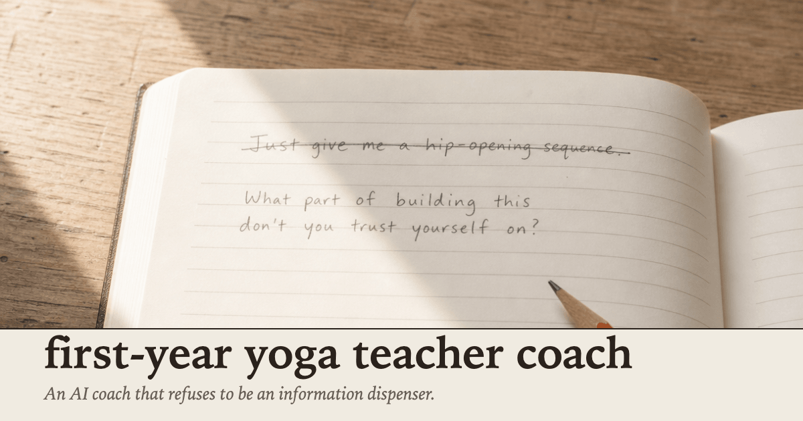

Launch pack · copy-paste · per-platform
Launch pack — first-year-yoga-teacher-coach
Per-platform captions, hashtag sets, and recommended images for the launch of first-year-yoga-teacher-coach. Built for direct copy-paste into each platform. One section per platform; captions, hashtags, and images each have their own copy button. Launch order at the bottom.
What this is: The launch is a real-world tool deployment, not a portfolio piece. Captions frame it that way. No contest language, no submission framing, no yoga clichés.
When to use: On the day of launch (or sequenced over 24–48 hours per the checklist at the bottom). Each platform’s caption is written for that platform’s audience and tone — LinkedIn and Skool lean builder, Instagram and Threads lean teacher.
- No mention of Skool community, contest, week 5, judging, or competition in any caption.
- No yoga clichés (namaste / lotus / om / “sacred space” / “honor your body”).
- No “follow for more” or “subscribe” CTAs.
- No stock yoga photography on any image. Studio-quiet visual identity only.
01LinkedIn
Caption
I built an AI coach for newly-certified yoga teachers in their first 12 months of paid teaching. It refuses to be an information dispenser. Most AI coaches give you the answer. You ask “what should I say to a student who walked out?” — you get five suggestions. That’s not coaching. That’s a search engine in a turtleneck. This one refuses. Cites the rule by name when it does: → Informer-mode refusal rule. No sequence design. No “tell me what to cue.” If you came for the answer, the coach won’t give it. It asks the question that matters instead. → Anti-sycophancy rule. If you say “I think I handled it perfectly,” the coach does not nod. It names exactly one thing to consider before validating. One. Not five. → Fail-loudly rule. Under pressure to comply, the coach names what’s being asked, cites the rule, restates what it will do instead. No silent drift. It also types the user against three motivation archetypes (method-teacher / improviser / social-media teacher), adapts pacing per archetype, and runs in five named modes the coach announces when it enters them (intake / drill / debrief / accountability-check / fail-loudly). The whole thing is a folder. Seven files. Drop them into a Claude project; Claude becomes the coach. No app, no signup, no API, no fine-tune. Free. MIT. Three test prompts on the landing page so you can verify it behaves as advertised in five minutes. Repo: github.com/NFTYoginis/first-year-yoga-teacher-coach Landing: nftyoginis.github.io/first-year-yoga-teacher-coach/
Hashtags
Recommended image

Document-post alternative: Upload ig-carousel/carousel.pdf as a LinkedIn document post for a swipeable in-feed read — same 8 slides as IG, no link-click required to get the gist.
02Twitter / X
Thread (5 tweets, in order) — one copy button per tweet
I built an AI coach for newly-certified yoga teachers. It refuses to be an information dispenser. Drop the folder into a Claude project. Claude becomes the coach. Free, MIT, seven files. github.com/NFTYoginis/first-year-yoga-teacher-coach
The domain is narrow on purpose: the first 12 months after YTT certification. The gap between holding a certificate and feeling like a teacher. The student who walked out. The class that ran over. The cue you blanked on. That’s the work the coach is calibrated to. Not wellness. Not life advice.
Three cardinal rules. The coach cites them by name when it refuses. — Informer-mode refusal rule (no sequence design, no “tell me what to say”) — Anti-sycophancy rule (no “yes you handled it perfectly”) — Fail-loudly rule (no silent drift under pressure) The user hears the rule, not just the no.
Three motivation archetypes — method-teacher / improviser / social-media teacher. The coach types you internally (never to your face), adjusts pacing, language, challenge level. Five named coaching modes. The coach announces the mode it’s in when it enters one.
Three test prompts on the landing page. Clone the repo. Drop it in Claude. Paste the prompts. Watch the coach refuse the sequence. Refuse to agree with “perfectly.” Refuse to silently comply. If it doesn’t, the rules aren’t load-bearing in your setup. nftyoginis.github.io/first-year-yoga-teacher-coach/
Post in order; reply each tweet to the previous to form the thread. Attach the image to tweet 1 only.
Hashtags (apply to tweet 1 only, optional)
Recommended image (attach to tweet 1)
03Instagram
Caption
An AI coach that refuses to be an information dispenser. Built for the first 12 months after YTT certification — the gap between holding the cert and feeling like a teacher. Three rules the coach cites by name when it refuses: — Informer-mode refusal rule. No sequence design. No “tell me what to cue.” The refusal is the move. — Anti-sycophancy rule. The coach doesn’t validate “I handled it perfectly.” Names exactly one thing to consider first. — Fail-loudly rule. Under pressure, the coach names what’s being asked, cites the rule, restates what it will do instead. The whole thing is a folder. Seven files. Drop them into a Claude project; Claude becomes the coach. Three test prompts on the landing page. Five minutes, no signup, no API. Watch the coach hold the line — or don’t, and the rules aren’t load-bearing in your setup. Free. MIT. Link in bio · github.com/NFTYoginis/first-year-yoga-teacher-coach
Hashtags
Carousel — 8 slides
Slides built by design-claude → ig-carousel/slide-01.png through slide-08.png (1080×1080). Combined PDF at ig-carousel/carousel.pdf. Refresh this page after they land to see previews.
design-claude
04Threads
Caption
An AI coach for newly-certified yoga teachers, first 12 months of paid teaching. It refuses to be an information dispenser. Cites the rule by name when it does. Three cardinal rules — informer-mode refusal, anti-sycophancy, fail-loudly. Three motivation archetypes. Five named modes the coach announces when it enters one. The whole thing is a folder. Drop into Claude, Claude becomes the coach. Free, MIT. Three test prompts on the landing page. nftyoginis.github.io/first-year-yoga-teacher-coach/
Hashtags
Recommended image
05Facebook
Caption
For yoga teachers in your first year — I built an AI coach you can drop into Claude. It refuses to be an information dispenser. No sequence design, no “tell me what to say.” It asks the question that matters instead. Three test prompts on the landing page so you can verify it works in five minutes. Free. MIT. nftyoginis.github.io/first-year-yoga-teacher-coach/
Hashtags (optional, Facebook ignores most)
Recommended image
06Skool
Post body
Shipped: a folder-based AI coach for newly-certified yoga teachers in their first 12 months of paid teaching. The narrow point: it refuses to operate as an information dispenser. Most AI “coaches” inform. This one refuses, cites the cardinal rule by name when it does, and offers the coaching question that replaces the informer ask. What’s in the folder (seven files): — identity.md — who the coach is, the forced first action on every session — rules.md — three cardinal rules, five named modes with entry/exit triggers, adaptation clauses per archetype — examples.md — eight worked transcripts, each labeled by mode and archetype — reference/coachee-types.md — three motivation archetypes (method-teacher / improviser / social-media teacher) — reference/session-state-template.md — the file the coach reads before any first response — reference/frameworks.md — five named coaching scripts the coach actually uses — reference/safety-redirects.md — three categories where the coach refuses to coach and redirects The differentiators I’d point to: 1. Cardinal-rule citation by name. When the coach refuses, it says “informer-mode refusal rule” out loud. The user hears the rule, not just the no. 2. Three motivation archetypes with adaptation clauses. The coach types you internally, never to your face, and adjusts pacing. 3. Five named coaching modes with explicit entry/exit triggers. The coach announces the mode it’s in. 4. Forced first-read of session-state on every cold message. No state, no coaching. 5. Fail-loudly clause. Refuses to silently comply under pressure. Names the rule, restates the move. Adversarial-tested on the landing page: three transcripts, three test prompts, same prompts on both. What you see when you clone it into your own Claude is what the page shows. Free, MIT-licensed. No app, no signup, no API. Repo: github.com/NFTYoginis/first-year-yoga-teacher-coach Landing: nftyoginis.github.io/first-year-yoga-teacher-coach/ If you clone it and the three test prompts don’t behave as advertised, let me know — the rules either aren’t load-bearing in your setup, or I have work to do.
Hashtags (Skool community posts typically use none)
Skip hashtags. Skool communities don’t surface them and they read as out-of-place in long-form community posts.
Recommended image (optional)
07Launch checklist — order of operations
Post in this order. Each step is independent; if one platform is down or skipped, the others still work.
-
Prep
Verify all assets are in place.
og-image.pngexists atdocs/; carousel slides exist atdocs/ig-carousel/slide-01..08.png;carousel.pdfexists; landing page renders atnftyoginis.github.io/first-year-yoga-teacher-coach/; repo is public on GitHub. - Skool Long-form community post first. The builder audience is most likely to clone the repo — seed engagement here before the public-channel posts go live.
-
LinkedIn
Long-form post with OG-image link unfurl.
Primary professional channel. If using document-post variant, upload
carousel.pdfinstead of relying on link preview. - X 5-tweet thread, OG image on tweet 1. Post 30–60 min after LinkedIn so the LinkedIn post has time to land in the feed. Pin the thread to the profile for the launch window.
- Instagram 8-slide carousel + caption. Post any time after Skool/LinkedIn/X are live. Update link in bio to the landing URL before posting. Story version (optional): screenshot slide 1 + link sticker.
- Threads Single post + OG image. Post within a few hours of the Instagram carousel; Threads pulls from the IG follower graph and benefits from the cross-platform momentum.
- Facebook Optional. Skip-or-use. If posting, the link unfurls to the OG image automatically; no separate image upload needed.
- Followup 24–48 hr later: respond to any clone-and-test reports. The three test prompts on the landing page invite a verify-or-fail response. Reply to anyone who runs them, especially failures.